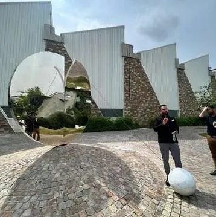

Stonex
Imprint on Time

Background
Apostrophe worked with Stonex India to build visibility for the brand across luxury, architecture, interiors, design, automotive and corporate media, creating platforms that brought its premium materials and experience-led proposition to influential industry audiences.
Objective
To strengthen Stonex's positioning beyond its product category by creating meaningful associations with luxury, design and architecture, while building relationships with influential media, architects, designers and premium consumer audiences.
Solution
Apostrophe developed a multi-dimensional communications programme spanning strategic partnerships, experiential initiatives, media engagement, influencer relations and thought-leadership content.
As part of the Stonex × McLaren collaboration, Apostrophe supported the exclusive showcase of McLaren's luxury car range, creating a natural intersection between two premium brands united by craftsmanship, innovation and high-end design.
Apostrophe also hosted a curated Stonex FAM Trip for media and influencers to the brand's Kishangarh facility and experience centre. The visit was designed as an immersive introduction to Stonex's world, moving beyond a conventional factory visit to showcase the scale, craftsmanship and creative possibilities of the marble industry.
A dedicated Media Meet & Greet at Kishangarh brought together journalists and writers covering corporate, lifestyle, interiors and architecture. The guest list included media from AD, ELLE Decor, Luxebook, The Hindu, BusinessLine, BW Businessworld, Stir World, The Hindu, Moneycontrol, The Pioneer, The Architect's Diary, Glitz, Architecture, Architecture + Design and Zee Business.
Apostrophe also developed the Imprint on Time campaign, curating a powerful mix of architects and design visionaries whose work reflects the intersection of functionality, artistry and enduring design. The initiative featured Priyanka Khanna & Rudraksh Charan – 42mm Architecture, Niroop Kumar Reddy – NA Architects, Prasanna Pravatikar – Cubism Architects, HP Lakhani – 23DC Architects, Hiren Patel – Fab Interiors, Fab Studio and Subhash Associates.
The Expert Series was conceptualised as a 360-degree media and content initiative in association with Architectural Digest and Hotstar, positioning the series as an owned-content platform for Stonex's website and community. The series spotlighted leading artists and architects, showcasing their work and exploring the ideas and craftsmanship that create an enduring “imprint on time.”
Impact
The programme created meaningful engagement between Stonex and influential stakeholders across architecture, interiors, design, luxury and lifestyle, while extending the brand's narrative beyond marble and materials into the larger world of design and craftsmanship.
Through immersive experiences, targeted media engagement, premium brand partnerships and original content, Apostrophe helped Stonex build stronger relationships with the people shaping India's design landscape and generate sustained industry visibility around the brand.